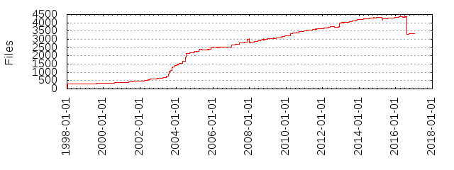

Files
- Total files
- 3343
- Total lines
- 1600360
- Average file size
- 13325.80 bytes
| Extension | Files (%) | Lines (%) | Lines/file |
|---|
| 115 (3.44%) | 15300 (0.96%) | 133 |
| 0 | 11 (0.33%) | 102330 (6.39%) | 9302 |
| 1 | 7 (0.21%) | 5594 (0.35%) | 799 |
| 2 | 1 (0.03%) | 509 (0.03%) | 509 |
| 3 | 2 (0.06%) | 93113 (5.82%) | 46556 |
| 52 | 1 (0.03%) | 1147 (0.07%) | 1147 |
| 60 | 1 (0.03%) | 462 (0.03%) | 462 |
| 7 | 1 (0.03%) | 669 (0.04%) | 669 |
| EXT | 1 (0.03%) | 1 (0.00%) | 1 |
| atheos | 1 (0.03%) | 29 (0.00%) | 29 |
| awk | 2 (0.06%) | 38 (0.00%) | 19 |
| base | 1 (0.03%) | 25 (0.00%) | 25 |
| bash | 1 (0.03%) | 20 (0.00%) | 20 |
| bat | 5 (0.15%) | 361 (0.02%) | 72 |
| blt | 2 (0.06%) | 537 (0.03%) | 268 |
| c | 380 (11.37%) | 370100 (23.13%) | 973 |
| cgi | 5 (0.15%) | 109 (0.01%) | 21 |
| chksum | 1 (0.03%) | 1 (0.00%) | 1 |
| cmd | 1 (0.03%) | 35 (0.00%) | 35 |
| cnf | 5 (0.15%) | 145 (0.01%) | 29 |
| crt | 1 (0.03%) | 48 (0.00%) | 48 |
| css | 2 (0.06%) | 757 (0.05%) | 378 |
| csv | 1 (0.03%) | 5 (0.00%) | 5 |
| d | 1 (0.03%) | 234 (0.01%) | 234 |
| dat | 2 (0.06%) | 22 (0.00%) | 11 |
| def | 6 (0.18%) | 2559 (0.16%) | 426 |
| el | 8 (0.24%) | 3218 (0.20%) | 402 |
| en | 1 (0.03%) | 7 (0.00%) | 7 |
| erb | 2 (0.06%) | 41 (0.00%) | 20 |
| gemspec | 8 (0.24%) | 261 (0.02%) | 32 |
| gif | 1 (0.03%) | 44 (0.00%) | 44 |
| gz | 2 (0.06%) | 218 (0.01%) | 109 |
| h | 153 (4.58%) | 68701 (4.29%) | 449 |
| html | 2 (0.06%) | 160 (0.01%) | 80 |
| in | 9 (0.27%) | 5667 (0.35%) | 629 |
| inc | 1 (0.03%) | 1400 (0.09%) | 1400 |
| ja | 11 (0.33%) | 2075 (0.13%) | 188 |
| js | 5 (0.15%) | 644 (0.04%) | 128 |
| json | 31 (0.93%) | 66 (0.00%) | 2 |
| key | 1 (0.03%) | 15 (0.00%) | 15 |
| kwd | 1 (0.03%) | 52 (0.00%) | 52 |
| largedoc | 1 (0.03%) | 3 (0.00%) | 3 |
| list | 2 (0.06%) | 347 (0.02%) | 173 |
| m4 | 2 (0.06%) | 61 (0.00%) | 30 |
| mak | 2 (0.06%) | 237 (0.01%) | 118 |
| markdown | 19 (0.57%) | 662 (0.04%) | 34 |
| md | 7 (0.21%) | 520 (0.03%) | 74 |
| mk | 5 (0.15%) | 2853 (0.18%) | 570 |
| mp4 | 1 (0.03%) | 3230 (0.20%) | 3230 |
| mspec | 1 (0.03%) | 26 (0.00%) | 26 |
| nacl | 2 (0.06%) | 95 (0.01%) | 47 |
| nt | 1 (0.03%) | 30 (0.00%) | 30 |
| patch | 1 (0.03%) | 191 (0.01%) | 191 |
| pem | 39 (1.17%) | 982 (0.06%) | 25 |
| pl | 7 (0.21%) | 69 (0.00%) | 9 |
| png | 28 (0.84%) | 1275 (0.08%) | 45 |
| pro | 1 (0.03%) | 21 (0.00%) | 21 |
| py | 6 (0.18%) | 61 (0.00%) | 10 |
| rb | 2175 (65.06%) | 673756 (42.10%) | 309 |
| rdoc | 27 (0.81%) | 10234 (0.64%) | 379 |
| rhtml | 21 (0.63%) | 550 (0.03%) | 26 |
| rl | 1 (0.03%) | 844 (0.05%) | 844 |
| rss | 2 (0.06%) | 222 (0.01%) | 111 |
| rz | 1 (0.03%) | 4 (0.00%) | 4 |
| s | 2 (0.06%) | 52 (0.00%) | 26 |
| scm | 6 (0.18%) | 41 (0.00%) | 6 |
| sed | 1 (0.03%) | 60 (0.00%) | 60 |
| sh | 4 (0.12%) | 118 (0.01%) | 29 |
| src | 49 (1.47%) | 107737 (6.73%) | 2198 |
| sub | 1 (0.03%) | 1194 (0.07%) | 1194 |
| svg | 1 (0.03%) | 2828 (0.18%) | 2828 |
| text | 22 (0.66%) | 1827 (0.11%) | 83 |
| tmpl | 20 (0.60%) | 1464 (0.09%) | 73 |
| trans | 20 (0.60%) | 2788 (0.17%) | 139 |
| tst | 1 (0.03%) | 26 (0.00%) | 26 |
| ttf | 6 (0.18%) | 2609 (0.16%) | 434 |
| txt | 7 (0.21%) | 651 (0.04%) | 93 |
| ucm | 4 (0.12%) | 76244 (4.76%) | 19061 |
| win32 | 1 (0.03%) | 141 (0.01%) | 141 |
| xml | 48 (1.44%) | 27522 (1.72%) | 573 |
| xsl | 1 (0.03%) | 368 (0.02%) | 368 |
| y | 1 (0.03%) | 11600 (0.72%) | 11600 |
| yml | 2 (0.06%) | 115 (0.01%) | 57 |
| zsh | 1 (0.03%) | 38 (0.00%) | 38 |